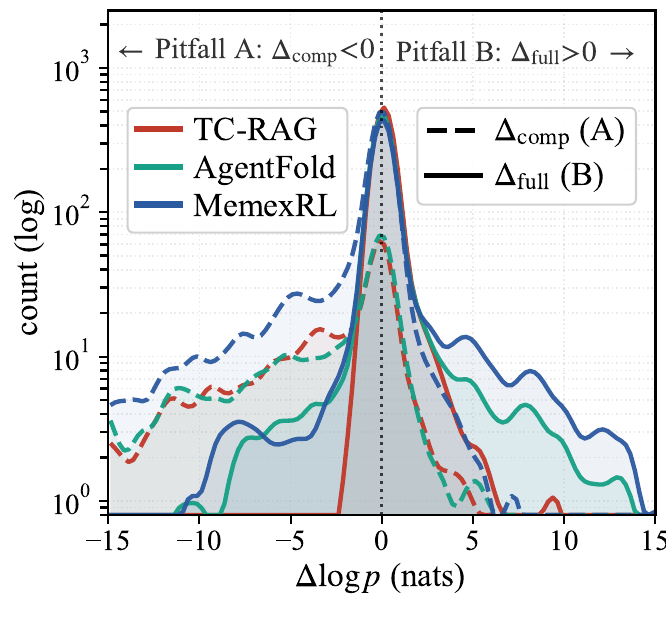
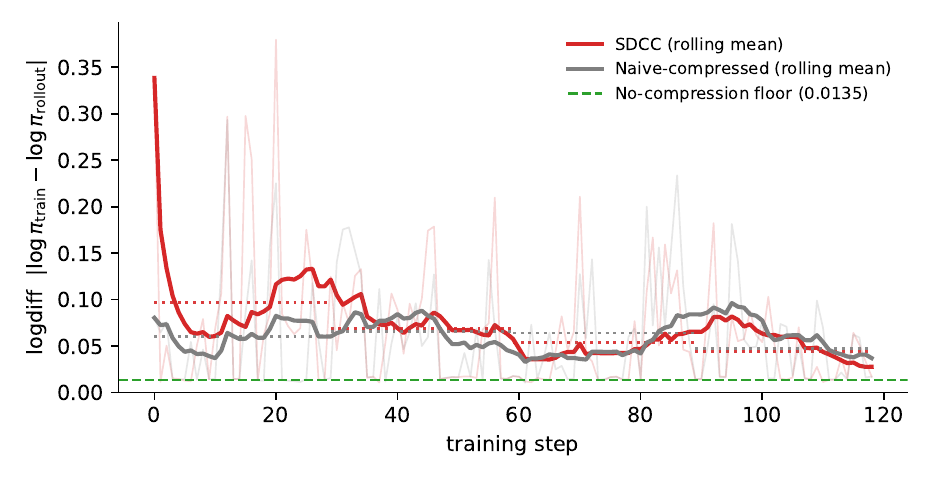
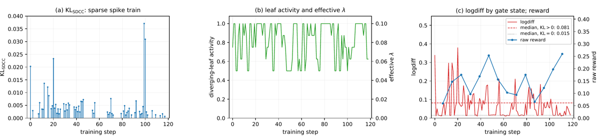

TL;DR — Dès que le harness compresse le contexte pendant le rollout, la trajectoire n'est plus une séquence mais un arbre de conditionnements ; les deux façons standard de l'aplatir pour le training scorent chaque token sous un préfixe qui n'est pas celui sous lequel il a été décodé. Le papier formalise l'invariant, donne deux corrections exactes (LogitTree, masque 4D) et une relaxation à un seul backward (SDCC).
Claim principal — (i) Entraîner sur le compressed walk final (Naive-Compressed) score les tokens sous un préfixe trop court (time-travel leakage) ; entraîner sur la trace physique complète (Naive-Full) sous un préfixe trop long (stale-context leakage) [§3.3]. (ii) Les deux corrections exactes sont gradient-équivalentes (Thm. 1, [§4.3]) et ramènent la dérive train/rollout au plancher numérique. (iii) SDCC, une forward-KL stop-gradient aux seules diverging leaves, borne l'écart comportemental train/déploiement en $O(\sqrt{\varepsilon_{KL}})$ par Pinsker [Prop. 2, §5.2] en gardant un seul backward, et marche en black-box (Claude Code, OpenCode). (iv) Sur 7 benchmarks QA, EM moyen : SDCC 46.0 / LogitTree 40.1 vs Naive-Compressed 36.7 sur TC-RAG [Tab. 1].
⚠️ Le claim « higher rollout rewards » de l'abstract est contredit par la moitié des cellules de Tab. 1 (voir §7.0).
Le papier ne construit pas un env mais une couche d'adaptation à cinq harnesses existants. C'est sa vraie contribution côté infra.
Chaque rollout, white-box ou black-box, se réduit à un seul record consommé identiquement par les 5 méthodes [§B]: $$\big(\;\mathbf{H}^{comp}\;,\;\mathbf{H}T\;,\;{(J_k, E_k)}^{K}\;\big)$$ — le compressed walk final, l'union physique de tous les tokens ayant existé dans la live view, et les eviction records (position physique où la k-ième compression a tiré, ensemble des positions supprimées), plus les log-probs par token loggées par le moteur de rollout au décodage [§B.1]. Chaque harness implémente un bridge adapter à deux responsabilités : (i) exécuter l'édition dans la boucle de rollout (réécrire la liste de messages avant le prochain décodage, donc le payload envoyé est vraiment la vue compressée) ; (ii) logger l'édition en coordonnées token de $\mathbf{H}_T$. Les loss hooks en aval sont harness-agnostiques [§B.1].
À chaque tour, la live view $\mathbf{H}'t = \textsc{View}_t(\mathbf{H}; \mathcal{E}_{\le t})$ : l'historique physique avec exactement les éditions ayant tiré jusqu'à $t$, et aucune autre [Éq. 2]. Politique ReAct : $\mathbf{H}_t = (s_0,a_0,o_0,\dots)$ — thought, tool call, observation [§3.2].
pop() sur une pile d'enveloppes de résultats d'outils — supprime la plus ancienne entièrement. Model-triggered. Peu de junctions, spans lourds (moyenne $|E_k| \approx 156$ tokens) ; $K$ moyen = 0.87, 29 diverging leaves/rollout [Tab. 3].memory_offload / memory_retrieve sur un store clé-valeur session-local + restore terminal avant le tour de réponse. Spans non monotones (un token peut sortir puis revenir). $|E_k| \approx 41$, $K$ = 2.00, 125 leaves — l'arbre le plus riche [Tab. 3].Multi-turn, $T = 30$ tool calls max [§B.1]. Contexte long géré par le harness (c'est l'objet du papier) : AgentFold plie des contextes physiques jusqu'à 121k tokens en vues logiques $\le$ 5,2k [§D.6]. « Max tok. » observé en rollout : jusqu'à 82 779 (SDCC × Claude Code) [Tab. 1].
Stack Slime (acteur Megatron + moteur de rollout SGLang), A100/H800 80 Go, FlashAttention [§B.1]. Recherche web live (pas d'index local) → ⚠️ non déterministe, non reproductible : le web change, le rerun exact est impossible. Reset / timeouts : non précisés.
Non précisée (erreurs d'outil, sorties mal formées). Le reward contient un bonus de format (§3) mais aucune politique de retry/parse n'est décrite.
Exemple pédagogique [§A, explicitement construit, pas loggé — « no quantity in it is a measurement »] : question « parapluie pour la réunion de demain à Shanghai ? » → get_weather("Shanghai", +1d) → enveloppe météo $o_1$ → le modèle écrit $S$ = « rain is likely tomorrow afternoon — bring an umbrella » pendant que $o_1$ est en vue → budget dépassé, pop évince $o_1$ à $J_1$ → tour get_transit → span $T$ = « Line 2 runs every four minutes… » après l'éviction.
- Pitfall A sur $S$ : l'appel d'outil survit, seul son résultat disparaît ; $-\log P(S \mid \mathbf{p_s}(S))$ exige la prévision météo d'un préfixe qui ne la contient plus → « la seule façon de réduire ce terme est de déplacer de la masse sur "rain tomorrow afternoon" comme prior sur la météo de Shanghai ». Une assertion tool-grounded devient une assertion de mémoire, et le modèle déployé énonce la prévision avant d'avoir lu l'outil [§A.1].
- Pitfall B sur $T$ : le gradient récompense le fait de relire la prévision après le pop — un geste que l'agent déployé ne peut pas faire [§A.2].
logdiff $= \frac{1}{|\mathcal{M}|}\sum_t |\log P_\theta(y_t|c_t^{train}) - \log P_\theta(y_t|c_t^{rollout})|$, à poids partagés → immunisé au sampler staleness, plancher numérique à 0.014 [Éq. 1, §3.1]. C'est un test à zéro calibré.
2. KL de conditionnement pleine distribution (probe offline Q1).
3. $\mathrm{KL}_{SDCC}$ (le régularisateur lui-même, pas un comparateur inter-méthodes).
4. Agentic EM — seule métrique d'efficacité [§C.4].
5. Compression depth $= \mathbb{E}[c_i | c_i > 0]$, et freq $= \Pr[c_i>0]$, délibérément séparées car freq n'a pas le même sens d'un éditeur à l'autre (seuil de longueur vs décision de la politique) [§6.1, §D.7].✅ Les auteurs précisent explicitement ne pas tuner le schedule de $\lambda$ par éditeur, « pour qu'aucun gain reporté ne soit un artefact de sweep » [§B.1] — bonne pratique, rare.
- Stabilité : KL de référence croît lissement de 0.002 à $\approx$0.03 sur le run AgentFold — « la politique bouge mais ne se détache pas de la référence, et aucun run-away n'est observé sans bonus d'entropie » [§D.6(iii)]. Le résidu $\mathrm{KL}{SDCC}$ ne croît pas sur le run. Rien d'abandonné n'est rapporté. ⚠️ logdiff lit « plus d'un ordre de grandeur trop haut » pendant les 20 premiers steps de chaque launch, le temps que trainer et moteur de rollout se réalignent → les auteurs jettent ces steps et le disent [§C.7].
- Compute : Slime sur A100/H800 80 Go [§B.1] ; WideSearch : 256 × H100 [§6.5]. Pas de GPU-heures. Multiplicateurs de coût par step (MemexRL, ×base) : Naive-Comp 1.00, Naive-Full 1.05, Search-R1 1.05, 4D 1.35, SDCC 1.55, LogitTree 4.20 [Tab. 9]. Le texte annonce par ailleurs 5–20× pour LogitTree en deep-search ($K$=5–20) [§4.3, §B.1].
⚠️ SDCC n'économise rien sur le forward : comme $\ell = C$, son budget token $C + \sum_{i=1}^{K}\ell_i$ égale terme à terme celui de LogitTree ; l'intégralité de l'économie est le backward (1 au lieu de $K+1$) [§B.3]. Le papier le dit clairement — honnête.
- Dynamique [§C.7, §D.6] : les 15 cellules white-box montent de 0.07 à 0.39 de reward entre premier point tracé et pic, mais les auteurs refusent de les départager (« trop bruité à l'œil », fenêtres de longueurs inégales, aucun marqueur "best" tracé). ⚠️ Ils signalent aussi que rollout/rewards est une quantité post-normalisation, médiane entre $-7.5\times10^{-3}$ et $-1.0\times10^{-8}$, donc centrée sur zéro et pas un reward — elle n'apparaît nulle part dans les figures. Précaution méthodologique notable.
Le papier est un catalogue de failure modes de training. Mais il ne traite aucun reward hacking au sens classique.
| # | Comportement | Détection | Correction |
|---|---|---|---|
| 1 | Pitfall A / time-travel leakage : $y_t$ scoré sous $\mathbf{p_s}(y_t) \subsetneq \mathbf{p_t}(y_t)$ ; des éditions postérieures à $t$ sont appliquées rétroactivement. Conséquence apprise : transformer une assertion ancrée sur un outil en assertion de mémoire — le modèle déployé énonce la prévision avant de lire l'outil [§A.1] | logdiff ↑ (0.366 sur AgentFold, ≈26× le plancher) ; probe offline $\Delta_{comp} < 0$ sur 60–78 % des tokens [Tab. 7] ; la carte de clip-rate se concentre immédiatement après chaque junction [§B.4] |
LogitTree / 4D (exact) ou SDCC ($O(\sqrt{\varepsilon_{KL}})$) |
| 2 | Pitfall B / stale-context leakage : $y_t$ scoré sous $\mathbf{H}_{<t} \supsetneq \mathbf{p_t}(y_t)$ ; le modèle apprend à exploiter un signal indisponible au déploiement, et l'erreur de credit assignment croît linéairement en $K$ [Éq. 12] | $\Delta_{full} > 0$ sur 55–71 % des tokens [Tab. 7] ; logdiff 0.197/0.203 sur TC-RAG/AgentFold [Tab. 1] |
idem |
| 3 | Ratio d'importance cassé : le rollout a échantillonné sous $\pi_{old}(\cdot | \mathbf{p_t})$, le training calcule $\pi_\theta(a_t | \mathbf{p_s})/\pi_{old}(a_t |
| 4 | Baseline d'advantage sur la mauvaise observation : ajustée à $V(\mathbf{H}_{<t})$ au lieu de $V(\mathbf{H}'_t)$ [§B.4] | analytique | idem |
| 5 | Non auto-correction de Pitfall A : l'espoir que GRPO absorbe la dérive est démenti — sur AgentFold, la moyenne par tiers de logdiff fait $0.069 \to 0.045 \to 0.064$ et le compte de steps eviction-heavy ne baisse pas, « parce que sa source (les folds continuent de tirer) reste stationnaire » [§D.6] |
fenêtre de training loggée | LogitTree reste épinglé à 0.013–0.015 sur les mêmes tiers |
Comportements émergents : aucun rapporté (ni positif ni négatif) au-delà des #1–5.
Reward hacking : ⚠️ pas une ligne. Vu la conception du reward (EM + bonus de format 0.2 pour une réponse fausse mais bien taguée), c'est peu crédible : ce terme récompense explicitement la production d'une réponse mal fondée plutôt que l'abstention, et sur 400+ steps de GRPO à température 1.0 c'est le genre de terme qui se fait exploiter. Absence = information.
| Chiffre annoncé | Où il est annoncé | Source dans le papier | Verdict |
|---|---|---|---|
| « naive training inflates the train-rollout log-probability gap, especially on eviction-heavy batches » | abstract | Tab. 1 : Naive-Comp logdiff moyen = 0.015 (TC-RAG), 0.366 (AgentFold), 0.012 (MemexRL) ; plancher 0.014 |
sur-généralisé — vrai sur le seul éditeur length-triggered (AgentFold). Sur TC-RAG et MemexRL, Naive-Compressed est au plancher. Les auteurs le reconnaissent à mi-mot : « la quantité discriminante est la pente contre la fréquence d'éviction, pas le niveau » [§6.2] |
| « $\approx 26\times$ le plancher » (0.366 vs 0.014) | §3.3, §6.2 | Tab. 1 | confirmé (0.366/0.014 = 26.1) |
| Naive-Comp bouge 30.5× (0.012→0.366) ; Naive-Full 9.7× (0.021→0.203) ; 4D 3.7× (→0.022) ; SDCC 6.5× (→0.071) ; LogitTree plat 0.012–0.013 | §6.2 | Tab. 1 | confirmé arithmétiquement pour les quatre premiers. LogitTree : sur-généralisé — plat à 0.012–0.013 sur les 3 white-box, mais 0.016 sur Claude Code |
| « The exact methods stay at the no-compression floor » | abstract | Tab. 1 : LogitTree 0.012–0.016 ; 4D 0.006–0.022 ; plancher 0.014 | confirmé (4D×AgentFold à 0.022 = 1.6× le plancher, reste dans le bruit annoncé) |
| « SDCC substantially closes the gap » | abstract | Tab. 1 : 0.071 vs Naive-Comp 0.366 sur AgentFold ; 0.013/0.011 ailleurs | confirmé, mais le « gap » n'existe que sur AgentFold (cf. ligne 1) |
| « higher rollout rewards » que naive | abstract, §6 | Tab. 1 colonne reward max — SDCC vs Naive-Comp : TC-RAG 0.922 > 0.850 ✅ · AgentFold 0.713 < 0.734 ❌ · MemexRL 0.750 = 0.750 ➖. 4D vs Naive-Comp : TC-RAG 0.800 < 0.850 ❌ · AgentFold 0.632 < 0.734 ❌ · MemexRL 0.416 ≪ 0.750 ❌ | contredit — sur 6 comparaisons appariées, 1 seule favorise la méthode proposée. Le claim ne tient que si l'on substitue l'EM au reward (ce que le papier fait de facto ailleurs) |
| « lower logit drift » | abstract | Tab. 1 | confirmé sur les cellules eviction-heavy, nul ailleurs (cellules déjà au plancher) |
| Borne $O(\sqrt{\varepsilon_{KL}})$ en TV | abstract | Prop. 2 [§5.2], preuve [§D.4] par Pinsker, inconditionnelle (ni score borné, ni hypothèse de paramétrisation) | confirmé |
| LogitTree requiert $K+1$ backwards ; 4D requiert kernel custom + eviction records white-box | abstract | Tab. 8 | confirmé |
| Thm. 1 : 4D et LogitTree calculent des gradients identiques | abstract, §4.3 | Tab. 1 : LogitTree×MemexRL EM 45.9 vs 4D×MemexRL EM 33.4 ; reward 0.715 vs 0.416 | confirmé en théorie, massivement dissonant en pratique. Les auteurs n'expliquent l'écart que pour logdiff (« le théorème égalise les gradients sur le même batch, chaque ligne est un run indépendant »), jamais pour les 12,5 points d'EM. ⚠️ Si deux méthodes prouvées gradient-équivalentes divergent de 12,5 EM, c'est la variance run-à-run qui est de cet ordre — ce qui invalide la lecture fine de toute la Tab. 1 |
| « Naive-Compressed rises to 0.024–0.059 on average across the three editors and peaks at 0.23–0.29 on eviction-heavy batches (~20× baseline) » | §B.4 (annexe) | Tab. 1 : moyennes 0.015 / 0.366 / 0.012, max 0.041 / 1.095 / 0.014 | contredit — aucune des deux plages ne se retrouve dans Tab. 1. Les valeurs 0.024/0.039/0.059 viennent en fait de Tab. 10 (profil de densité d'éviction, autre estimateur) |
| « 4D's drift stays at the floor (0.017–0.021) vs Naive-Compressed's (0.054–0.058) » sur les harnesses eviction-heavy | §D.6 | Tab. 1 : 4D = 0.006 / 0.022 ; Naive-Comp = 0.015 / 0.366 | introuvable — ces quatre valeurs n'apparaissent nulle part ailleurs |
| Naive-Comp × MemexRL drift = 0.0237 | Tab. 9 | Tab. 1 : 0.012 ; §C.7 : 0.0133 ; Tab. 10 : 0.024 | contredit — 4 valeurs pour la même cellule. Les auteurs désamorcent : « une médiane de médianes par itération, une médiane poolée sur les steps steady, et la colonne drift de Tab. 1 sont trois estimateurs différents, aucun numériquement interchangeable » [§C.7]. ⚠️ Honnête, mais cela signifie qu'aucun chiffre de drift du papier n'est comparable à un autre chiffre de drift du papier |
| WideSearch : Pass@1 +11.1 %, Pass@4 +42.9 % | §6.5, Tab. 2 | Tab. 2 : Pass@1 4.5→5.0 = 9/200 → 10/200 questions ; Pass@4 7.0→10.0 = 14/200 → 20/200 | confirmé arithmétiquement, sur-généralisé en substance : « +42.9 % » = 6 questions, « +11.1 % » = 1 question, sans IC, un seul run, 15 steps d'entraînement |
| WideSearch entraîné sur 256 H100 | §6.5 | §B.1 : « A100- or H800-class » | incohérence mineure (régime explicitement distinct, mais le papier ne réconcilie pas) |
SDCC logdiff −55 % sur la fenêtre loggée, monotone par quarts |
§6.4, §D.6 | Fig. 8 | confirmé par la figure, mais les auteurs écrivent eux-mêmes : « un éditeur, une échelle, nous n'attachons aucun intervalle de confiance » |
| « our work is the first to formalize the conditioning invariant » | §Part I | §7 Provenance : le hook de loss TITO-style de Slime « esquissait déjà l'objectif segmenté par tour — un forward par segment de réponse, scoré contre un préfixe de rollout reconstruit » | sur-généralisé — la primauté revendiquée porte sur la formalisation et SDCC, pas sur l'idée. Les auteurs le disent explicitement dans §7 (« not the idea of replaying tokens under the prefix that produced them »), mais pas dans Part I |
| Méthode | TC-RAG | AgentFold | MemexRL | Claude Code | OpenCode |
|---|---|---|---|---|---|
| Naive-Full | 34.9 | 27.7 | 32.1 | — | — |
| Naive-Compressed | 36.7 | 33.2 | 28.9 | — | — |
| 4D mask | 37.2 | 34.2 | 33.4 | n/a | n/a |
| LogitTree | 40.1 | 37.5 | 45.9 | 35.9 | 35.0 |
| SDCC | 46.0 | 42.4 | 43.1 | 37.5 | 36.9 |
Ancres : Qwen3-4B non entraîné 9.9 · Search-R1 no-compression + RL 23.0 · Claude Code non entraîné 26.3 · OpenCode non entraîné 29.0.
⚠️ Trois lectures que le papier ne fait pas : 1. Le harness pèse plus que le RL. Claude Code sans aucun entraînement (26.3) bat Search-R1 avec RL (23.0). L'essentiel de l'écart dans ce tableau vient de la compression du contexte, pas de la correction de conditionnement. 2. SDCC (approximatif) bat LogitTree (exact) sur 4 cellules sur 5 — 46.0 vs 40.1, 42.4 vs 37.5, 37.5 vs 35.9, 36.9 vs 35.0. Si l'exactitude était le mécanisme causal, l'ordre devrait être inverse. Soit la KL de SDCC agit comme régularisateur (effet non revendiqué, non testé), soit le bruit domine. Le papier ne commente pas. 3. 4D est systématiquement le plus faible des trois « ours » alors qu'il est prouvé équivalent à LogitTree.
logdiff d'un facteur 5.6 en médiane : 0.081 (IQR 0.058–0.125) avec gate ouverte vs 0.015 (IQR 0.014–0.017) fermée. C'est l'ablation la plus convaincante du papier : elle prouve que la correction se branche là où le problème existe et nulle part ailleurs.Quasi nul : une seule échelle (4B) pour toute la matrice ; Qwen3.7-Air apparaît une fois, sur un autre benchmark, avec une seule comparaison SFT vs LogitTree@15 steps. Pas d'effet du nombre de tâches ni du compute.
evidence — 2/6| Case | Verdict | Justification (1 ligne) |
|---|---|---|
baselines |
✅ vrai | Naive-Comp / Naive-Full / contrôle Search-R1 sans compression, même Qwen3-4B, même stack Slime, même pipeline de rollout live ; et Naive-Comp est SDCC à $\lambda{=}0$, même chemin de code [§6.1, §6.4]. |
ablation |
✅ vrai | L'ablation $\lambda{=}0$ isole exactement la KL de junction ; la gate leaf-gated sépare logdiff d'un facteur 5.6 ; contrôle négatif monotone par densité d'éviction [Tab. 10, Tab. 11, Fig. 7]. |
variance |
❌ faux | Aucune seed multiple, aucun intervalle de confiance ; les auteurs l'écrivent trois fois [§6.4, §C.5, §D.6], et LogitTree vs 4D — prouvés gradient-équivalents — diffèrent de 12,5 points d'EM [Tab. 1]. |
coherence |
❌ faux | Quatre valeurs différentes pour la dérive de la même cellule (0.012 / 0.0133 / 0.024 / 0.0237) ; deux plages d'annexe (0.054–0.058, 0.23–0.29) introuvables dans Tab. 1 ; « higher rollout rewards » contredit sur 5 comparaisons appariées sur 6 (§7.0). |
eval |
❌ faux | Contamination non discutée sur NQ/TriviaQA/HotpotQA ; EM reporté = meilleur checkpoint full-suite de la cellule [§6.1] ; probe Q1 sur 32 rollouts synthétiques [§C.4] ; vérifieur WideSearch non décrit. |
repro |
❌ faux | Code « supplementary » annoncé sans lien ni dépôt ; recherche web live donc non déterministe ; pipeline black-box « hors de ce codebase » [§B.1]. |
Plausible mais fragile — le diagnostic est solide, la méthode est à répliquer.
Deux niveaux à séparer nettement :
1. Le diagnostic (l'arbre de conditionnement, les deux pitfalls, le ratio d'importance cassé, logdiff comme test à zéro calibré) est analytiquement juste, mesuré avec un plancher propre, et non réfutable : il ne dépend pas de l'EM. C'est ce qu'il faut retenir.
2. Le classement des méthodes par EM n'est pas établi : pas de seeds, variance apparente de l'ordre des effets, sélection du meilleur checkpoint, et la méthode approximative bat la méthode exacte sur 4 cellules sur 5 — ce qui est incohérent avec le mécanisme causal revendiqué.
Les deux figures les plus importantes (Fig. 1a l'arbre de trajectoire, Fig. 2 les trois matérialisations) sont des TikZ non extractibles : voir papers/2609.00865/paper.pdf, p. 4 (Fig. 1) et p. 5 (Fig. 2). Fig. 2 est le meilleur schéma unique du papier : (a) l'arbre, (b) LogitTree qui marche les $K{+}1$ branches, (c) le masque 4D qui les plie en un forward, (d) SDCC qui garde le forward compressé et reconstruit les autres jambes en teachers stop-gradient.

Ce qu'il faut voir : les deux pitfalls sont deux distributions de signes opposés. $\Delta_{comp}$ (pointillé, queue gauche, moyennes par harness entre $-4.0$ et $-1.6$) = le training conditionne sur trop peu ; $\Delta_{full}$ (plein, queue droite, $+0.2$ à $+0.7$) = sur trop. ⚠️ Mesuré sur 32 rollouts synthétiques à 3 tours par harness, modèle non entraîné, forwards seuls [§C.4] — les auteurs disent eux-mêmes que la lecture est qualitative (signe et ordre de grandeur), sans IC, parce que les leaves sont clusterisées par rollout. Le fait structurant — l'asymétrie de signe, présente sur 55–78 % des tokens selon la cellule — tient ; les magnitudes, non.
Ce qu'il faut voir : le seul graphe qui montre la dynamique de la correction. LogitTree est épinglé au plancher par construction (0.013–0.015). SDCC démarre 60 % au-dessus de Naive-Compressed (sa KL leaf-gated perturbe d'abord exactement les positions mal conditionnées), puis descend de −55 % monotone par quarts et passe sous Naive-Compressed, qui ne montre aucune tendance directionnelle. C'est l'argument le plus propre du papier : la dérive de Naive-Compressed n'est pas absorbée par l'optimiseur, parce que sa source (les folds continuent de tirer) est stationnaire [§D.6]. ⚠️ Un éditeur, une échelle, pas de seeds.
Ce qu'il faut voir : panel (a) — $\mathrm{KL}{SDCC}$ est un train de spikes, non nul sur un peu plus de la moitié des steps et exactement zéro sinon ; (c) — conditionner sur la gate séparelogdiff d'un facteur 5.6 (médiane 0.081 gate ouverte vs 0.015 fermée, soit le plancher sans compression). Le régularisateur s'engage aux positions mal conditionnées et seulement là. C'est ce qui rend la borne $O(\sqrt{\varepsilon})$ non vacue dès les premiers steps, et c'est le design pattern à copier : un terme de correction gaté par un événement détectable du harness, inerte le reste du temps.
Pertinence maximale : un agent juridique travaille sur des dossiers de plusieurs centaines de milliers de tokens, donc son harness compressera, donc ce bug sera présent dès le premier run de RL. Ce papier est moins une méthode qu'un prérequis de correction à vérifier avant toute mesure.
| Ingrédient | Choix du papier | Équivalent juridique | Transfert | Ce qui manque |
|---|---|---|---|---|
| Source des tâches | RedSearcher + ASearcher, 81 638 QA multi-hop, aucun filtrage [§B.1] | Recherche juridique multi-source (Harvey LAB, Vals LRB) : questions nécessitant plusieurs allers-retours base de jurisprudence / doctrine / texte | adaptable — la propriété requise est « multi-hop assez long pour déclencher des évictions », ce que le juridique a naturellement | Rien à prendre côté data : le papier n'apporte aucune recette de construction de tâches |
| Vérifieur | EM + bonus de format 0.2, fiabilité non mesurée [§C.5] | Pas d'EM possible sur une analyse argumentée | non — ne pas transférer. ⚠️ Importer le bonus de format 0.2 serait une erreur en droit (récompenserait une réponse bien formatée mais juridiquement fausse) | Tout. Le papier n'a rien à dire sur la vérification sans vérité exacte |
| Harness / outils | Contrat à un seul record $(\mathbf{H}^{comp}, \mathbf{H}_T, {(J_k,E_k)})$ + bridge adapter par harness, loss hooks harness-agnostiques [§B.1] | Même contrat sur un harness juridique (fenêtre bornée + résumé auto, ou mémoire de travail sur pièces du dossier) | direct — c'est la pièce la plus réutilisable du papier, domaine-agnostique par construction | Rien. À implémenter tel quel |
| Détection black-box | Junctions détectées comme divergence de préfixe entre payloads consécutifs ; teacher = payload précédent [§B.1, Fig. 10] | S'applique à tout harness interne dont on ne contrôle pas l'auto-compact | direct — et c'est la voie à prendre si le harness Gemini Law compacte sans exposer les spans | Le teacher « payload précédent » est une approximation non validée ; erreur non quantifiée |
| Algo | GRPO + loss hook ; LogitTree ($K{+}1$ backwards) ou SDCC (1 backward, forward-KL leaf-gated, $\lambda$ 0→0.1 sur 20 % des steps) [§5, §B.1] | Identique — aucun ingrédient du hook n'est spécifique à la recherche web | direct | Pas d'ablation sur $\lambda$ ni sur la direction de la KL ; pas de seeds |
| Curriculum | Aucun | — | non | — |
| Anti-hacking | Aucun [§5] | — | non | Le papier n'apporte rien ; il introduit même un risque (bonus de format) |
| Diagnostic | logdiff à poids partagés → plancher calibré 0.014, immunisé au sampler staleness [§3.1] |
Même métrique, même plancher, sur un rollout juridique | direct — c'est un test, pas une méthode : il coûte un re-forward et dit oui/non | Rien |
logdiff comme test de recevabilité du pipeline, avant toute mesure d'efficacité. Ce n'est pas la contribution que les auteurs mettent en avant, mais c'est la plus solide et la moins chère : à poids partagés, l'écart entre la log-prob loggée au décodage et celle recalculée au training a un zéro calibré (0.014 pour Qwen3-4B sur ce stack). Tout ce qui dépasse ce plancher est un bug de conditionnement, pas du bruit. Pour un agent juridique dont le harness compacte le dossier, c'est le premier chiffre à regarder — et si le pipeline est propre, aucune des trois méthodes du papier n'est nécessaire.
En second : le contrat à un record unique + bridges harness-agnostiques. Il découple complètement « comment le harness compresse » de « comment la loss conditionne », ce qui permet de changer de stratégie de mémoire sans retoucher l'entraînement.
logdiff sous le schéma de training actuel, et le comparer au plancher obtenu sur des dossiers courts ($K=0$).logdiff sera élevé d'un facteur $\ge$ 2 sur les batches avec compaction, et le papier prédit que la gate sera sélective (bas ailleurs). Si logdiff reste au plancher, le pipeline est déjà conditioning-consistent et il n'y a rien à faire.« Quelle est la valeur de logdiff à poids partagés sur nos rollouts long-dossier qui déclenchent une compaction de contexte, et quel préfixe le trainer utilise-t-il exactement pour rescorer un token émis avant la compaction ? » — si personne n'a la réponse, c'est que le bug est probablement présent, et il invalide silencieusement le ratio d'importance de PPO/GRPO sur exactement les trajectoires les plus longues, c'est-à-dire les plus juridiquement intéressantes.